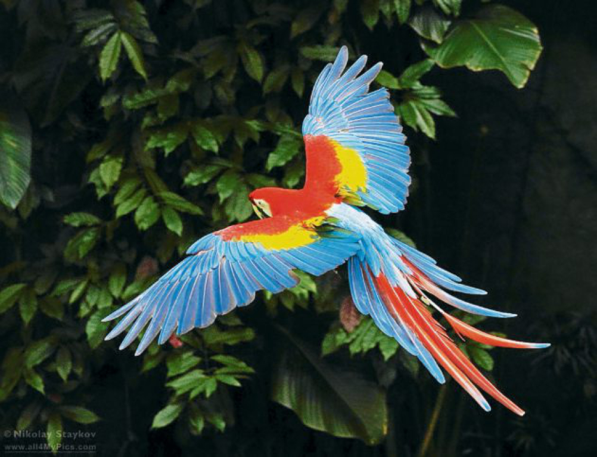
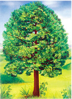
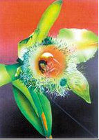
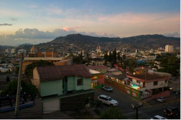
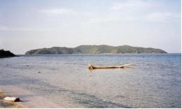

Información
Historia
El territorio que corresponde a la actual Honduras fue hogar de la civilización maya durante el primer milenio de nuestra era, como lo testimonian las ruinas de Copán. Fue invadido después por los Aztecas y a continuación por los Mosquitos. En 1502, la región fue descubierta por Cristóbal Colón.
Simbolos Patrios

Ave Nacional

Árbol Nacional

Flor Nacional

Bandera Nacional
Extensión Territorial
112,492 km²
Departamentos
- Atlántida: La Ceiba
- Choluteca: Choluteca
- Morazán
- Colón: Trujillo
- Comayagua: Comayagua
- Copán: Santa Rosa de Copán
- Cortés: San Pedro de Sula
- El Paraíso: Yuscarán
- Francisco Morazán: Tegucigalpa
- Gracias a Dios: Puerto Lempira
- Intibucá: La Esperanzae
- Islas de la Bahía: Roatán
- La Paz: La Paz
- Lempira: Gracias
- Ocotepeque: Nuevo Ocotepeque
- Olancho: Juticalpa
- Santa Bárbara: Santa Bárbara
- Valle: Nacaome
- Yoro: Yoro
Lugares Turisticos

Tegucigalpa
